図解：盛期ルネサンス
盛期ルネサンスの展開
- 1494
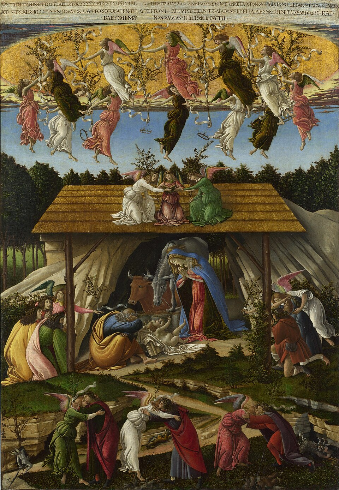
メディチ家追放イタリア戦争で失脚
サヴォナローラ台頭 - 1500年頃

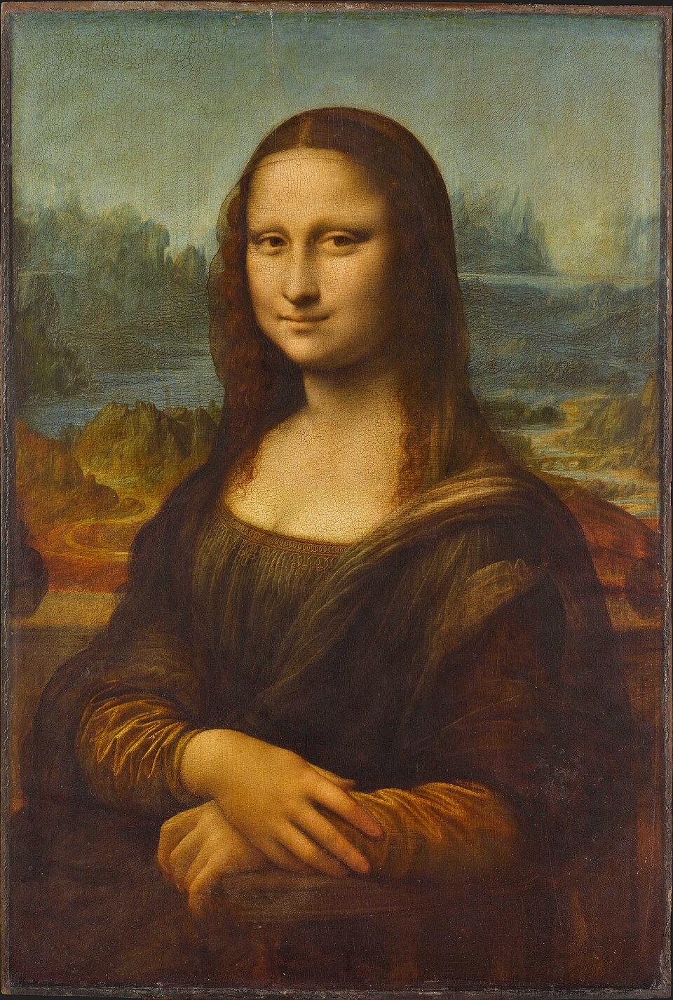
レオナルドの構図人体と自然の研究
三角形・スフマート - 1505〜
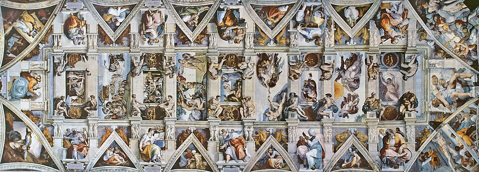
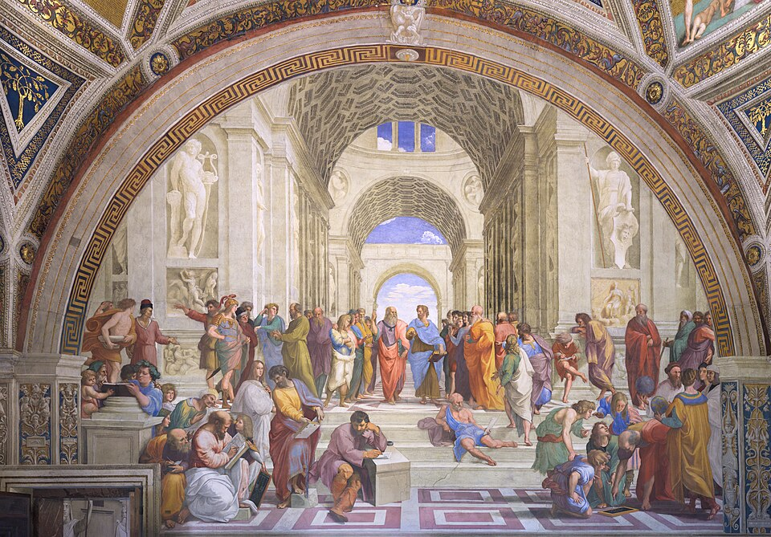
教皇が招くローマユリウス2世が支援
ミケランジェロら - 16世紀
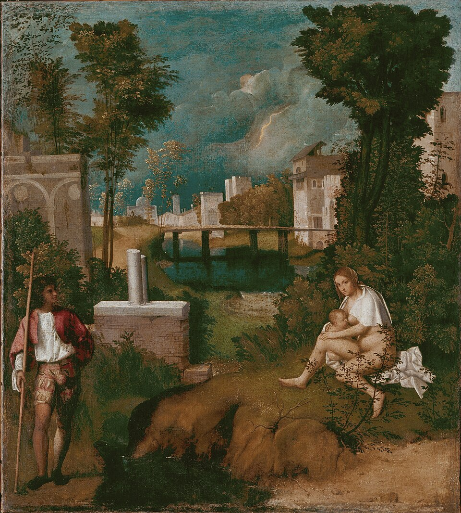
 ヴェネツィア派油彩で色から描く
ヴェネツィア派油彩で色から描く
ジョルジョーネら - 1527
 ローマ劫掠芸術家が各地へ
ローマ劫掠芸術家が各地へ
マニエリスムへ
フィレンツェ派と何が違うか
図版の出典
- 《神秘の降誕》サンドロ・ボッティチェリ：出典（Public domain（PD-Art））
- 《最後の晩餐》レオナルド・ダ・ヴィンチ：出典（Public domain（PD-Art））
- 《モナ・リザ》レオナルド・ダ・ヴィンチ：出典（Public domain（PD-Art））
- 《システィーナ礼拝堂天井画》ミケランジェロ・ブオナローティ：出典（CC BY-SA 3.0）
- 《アテネの学堂》ラファエロ・サンティ：出典（Public domain（PD-Art））
- 《嵐（テンペスタ）》ジョルジョーネ：出典（Public domain（PD-Art））
- 《ウルビーノのヴィーナス》ティツィアーノ：出典（Public domain（PD-Art））
- 《長い首の聖母》パルミジャニーノ：出典（Public domain（PD-Art））
重要人物
三大巨匠
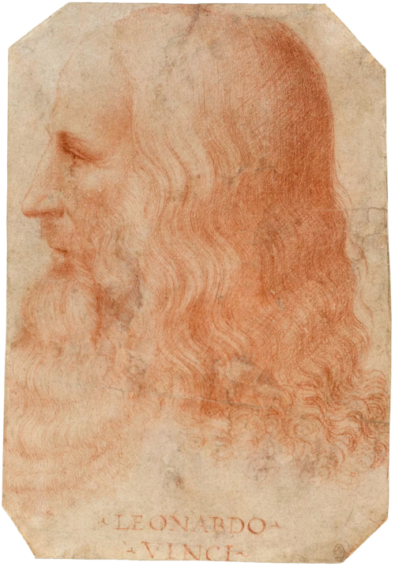
レオナルド・ダ・ヴィンチ万能の人研究に基づく写実と統一された構図。晩年はフランスへ ミケランジェロ彫刻家・画家《ピエタ》《ダヴィデ》、システィーナ礼拝堂の天井画
ミケランジェロ彫刻家・画家《ピエタ》《ダヴィデ》、システィーナ礼拝堂の天井画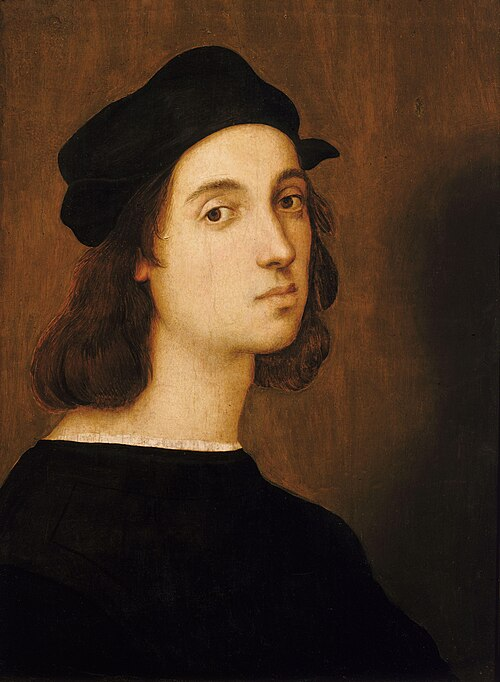
ラファエロ・サンティ画家学ぶ力に優れた「聖母の画家」。《アテネの学堂》
ヴェネツィアの画家
- アントネッロ・ダ・メッシーナ画家フランドルの油彩技法をヴェネツィアへ持ち帰る
- ジョヴァンニ・ベッリーニ画家油彩を発展させ、写実的な肖像画で人気を得る
- ジョルジョーネ画家人物を風景に溶け込ませる。《嵐》
 ティツィアーノ画家ジョルジョーネの弟子。写実性と鮮やかな色彩
ティツィアーノ画家ジョルジョーネの弟子。写実性と鮮やかな色彩
初期ルネサンスの画家
フィレンツェの政治
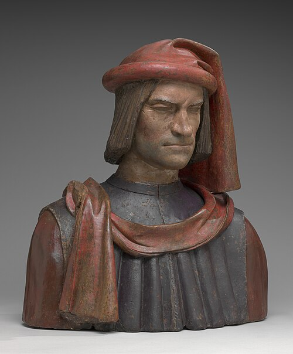
ロレンツォ・デ・メディチパトロン「豪華王」。その死がメディチ家失脚の一因- ピエロメディチ家ロレンツォの長男。仏軍の侵入を認め追放される
- サヴォナローラ修道士贅沢を捨て純粋な信仰に生きるよう説く
教皇・国王と美術史家
 ユリウス2世教皇「戦う教皇」。ミケランジェロやラファエロを支援
ユリウス2世教皇「戦う教皇」。ミケランジェロやラファエロを支援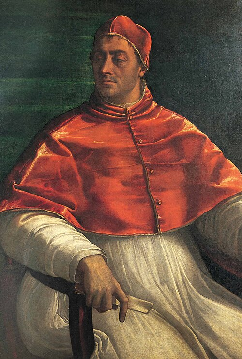
クレメンス7世教皇フランス側に付き、ローマ劫掠を招く フランソワ1世フランス国王晩年のレオナルドを招き、《モナ・リザ》が収蔵品に
フランソワ1世フランス国王晩年のレオナルドを招き、《モナ・リザ》が収蔵品に- ヴァザーリ美術史家レオナルドを新しい様式の創始者と位置づける
肖像・図版の出典
- 《レオナルドの肖像》フランチェスコ・メルツィ（帰属）、1515～1518年頃、ロイヤル・コレクション（ウィンザー）：出典（Public domain）
- 《ミケランジェロの肖像》ダニエーレ・ダ・ヴォルテッラ（帰属）、1544年頃（部分）：出典（Public domain）
- 《自画像》ラファエロ、1504～1506年頃、ウフィツィ美術館：出典（Public domain）
- 《自画像》ティツィアーノ、1560年代、プラド美術館：出典（Public domain）
- 《東方三博士の礼拝》に描き込まれた自画像とされる人物（部分）、ボッティチェリ、1475年頃、ウフィツィ美術館：出典（Public domain）
- 《ロレンツォ・デ・メディチ》テラコッタ胸像（ヴェロッキオらの原型によるとされる）、1478～1521年、ワシントン・ナショナル・ギャラリー：出典（CC0）
- 《教皇ユリウス2世の肖像》ラファエロ、1511～1512年、ロンドン・ナショナル・ギャラリー：出典（Public domain）
- 《教皇クレメンス7世の肖像》セバスティアーノ・デル・ピオンボ、1526年頃、カポディモンテ美術館：出典（Public domain）
- 《フランソワ1世の肖像》ジャン・クルーエ、1530年頃、ルーヴル美術館：出典（Public domain）
盛期ルネサンスの舞台
盛期ルネサンスという時代
動画 1:14～15世紀の初期ルネサンスでは、フィレンツェを中心に、多くの芸術家がパトロンの支援を受けて活躍しました。建築のブルネレスキやアルベルティ、彫刻のドナテッロやヴェロッキオ、絵画のマザッチョ、フラ・アンジェリコ、ボッティチェリなどが代表例です。
1500年からの約30年間には、こうした先人をしのぐ才能が現れました。三大巨匠と呼ばれるレオナルド・ダ・ヴィンチ、ミケランジェロ、ラファエロ、そしてヴェネツィアで活躍したジョルジョーネらです。その作品は、それまで規範だった自然や古代の作品をもしのぐほど完成されたものと評価されました。盛期ルネサンスの美術は、19世紀半ば頃まで、最高のものとして絶対視されたほどです。一方、その華やかさの背景には、イタリア社会の混乱や、次の美術の契機となる宗教改革もありました。
メディチ家の失脚とイタリア戦争
動画 2:26～初期ルネサンスのフィレンツェでは、金融業で財を成したメディチ家が、多くの芸術家を支援しました。しかし盛期ルネサンスには、その失脚によって美術の中心が移ります。原因の一つは、「豪華王」ロレンツォ・デ・メディチの死でした。後を継いだ長男ピエロはまだ20歳で、一族の発言力を保てませんでした。主な収入源であった金融業も、破綻寸前の状態でした。
決定的な契機となったのは、イタリア戦争です。フランス国王がナポリ王国の王位継承権を主張し、イタリア全土を巡る戦争が始まりました。1494年、フランス国王シャルル8世は、ナポリを目指して南下します。途中に位置するフィレンツェで、ピエロは交戦せず、独断でフランス軍の侵入を認めました。この失態によってメディチ家は追放され、フィレンツェはルネサンスの中心ではなくなっていきます。
信仰とボッティチェリの変化
動画 3:43～メディチ家の後に影響力を強めたのが、サヴォナローラです。熱心なキリスト教信者であった彼は、実質的な独裁状態にあったメディチ家へ不満を持つ人々を取り込みました。その方針はメディチ家と対照的で、贅沢品を捨て、純粋な信仰に生きるよう市民に説きました。
その強い宗教的影響を受けた芸術家が、初期ルネサンスの巨匠ボッティチェリでした。《ヴィーナスの誕生》や《春》で知られる彼は、自らの作品を廃棄したとも伝えられます。晩年の《神秘の降誕》には、ゴシックを思わせる遠近表現が見られます。もともと厳密な遠近表現を最優先した画家ではありませんが、それ以前には遠近法を用いていました。

《神秘の降誕》
- 作者
- サンドロ・ボッティチェリ
- 制作時期
- 1500年
- 所在地・所蔵
- ナショナル・ギャラリー、ロンドン
- 素材・形式
- カンヴァス
出典・画像について
サヴォナローラの影響を受けた後は、それまでの生き生きとした画風が失われ、この時期の作品は高く評価されませんでした。盛期ルネサンスと時期が重なりながら、ボッティチェリがその中心人物として扱われない背景には、こうした作風の変化がありました。
戦う教皇のローマとヴェネツィア
動画 4:56～盛期ルネサンスの舞台は、フィレンツェからローマとヴェネツィアへ移りました。ローマは教皇領の重要都市でしたが、15世紀には教皇の力が弱く、他国に押されていました。イタリア戦争が起こると、教皇は他国の介入を排除するため、徹底して抗戦します。ユリウス2世は「戦う教皇」と呼ばれ、自ら前線に出たともいわれる人物でした。
他国の王からも無視できない存在となった教皇は、ローマと教皇庁を復興するため、多くの芸術家を招いて支援しました。ユリウス2世が支援した代表的な芸術家には、ミケランジェロ、ラファエロ、ブラマンテがいます。彼は盛期ルネサンスの重要なパトロンでした。
もう一つの舞台ヴェネツィアは、海上貿易で得た富を背景に、16世紀に黄金期を迎えました。この地では、色彩表現に富む独特の手法を用いるヴェネツィア派が現れます。ジョルジョーネやティツィアーノが、その代表的な画家です。
レオナルド・ダ・ヴィンチ
工房の修業と万能の人
動画 6:07～三大巨匠の一人、レオナルド・ダ・ヴィンチは「万能の人」と呼ばれます。1470年代から活動していましたが、その才能は別格と見なされ、美術史家ヴァザーリは、新しい様式の創始者として位置づけました。
若い頃は、彫刻家ヴェロッキオの工房で修業しました。《キリストの洗礼》は共同制作した作品で、レオナルドは20歳頃に天使を描いています。ヴァザーリの伝記には、弟子の技量に驚いたヴェロッキオが、二度と絵を描かなかったという話があります。ただし、これは誇張を含み、実際には本業の彫刻制作へ戻っただけだともいわれます。

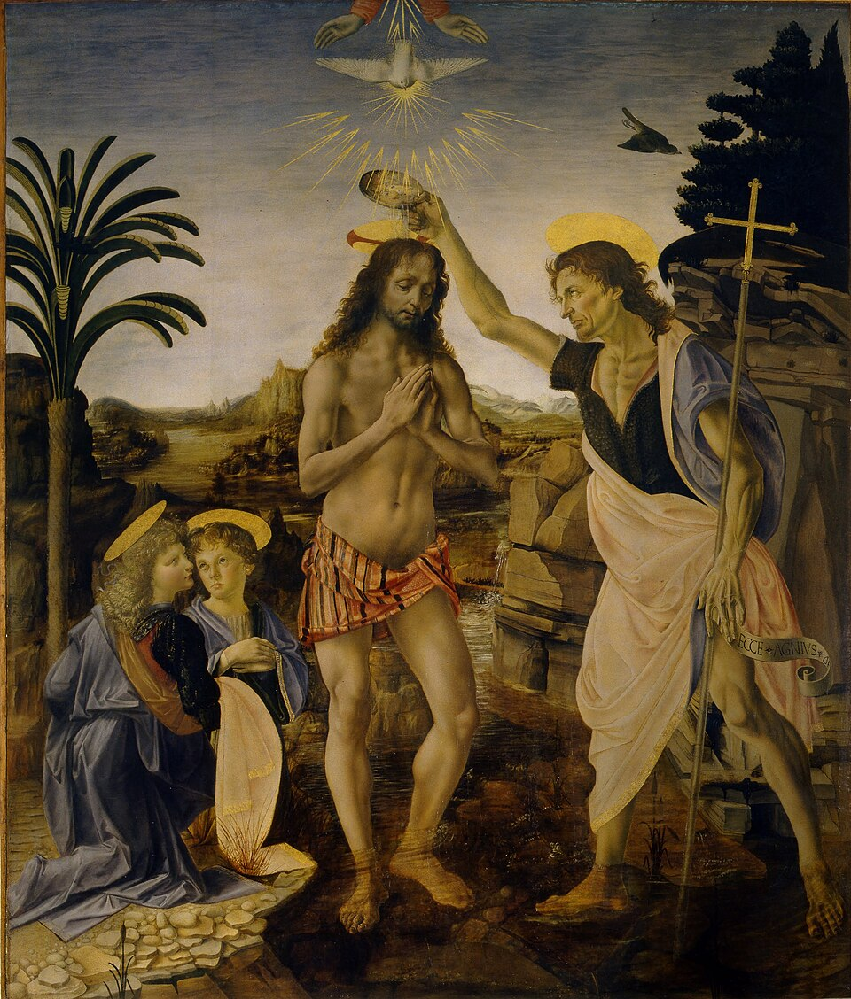
画像を拡大 ＋《キリストの洗礼》
- 作者
- アンドレア・デル・ヴェロッキオ、レオナルド・ダ・ヴィンチ
- 制作時期
- 1470～1475年頃
- 所在地・所蔵
- ウフィツィ美術館、フィレンツェ
- 素材・形式
- テンペラ・油彩、板
出典・画像について
ルネサンスには、多方面で活動する芸術家が少なくありません。ヴェロッキオも、彫刻家、画家、金工家を兼ねていました。しかしレオナルドの関心は芸術だけにとどまらず、爆弾やヘリコプターの考案、自然科学、解剖学など、世界のあらゆるものへ向けられていたといわれます。
研究に基づく構図と二つの傑作
動画 7:15～レオナルドの絵画は、人体と自然の研究に基づく写実表現と、統一された画面構成が特徴です。《岩窟の聖母》では、人物を三角形に配置し、中央の聖母に自然と目が向くよう構図を練っています。同様の構成は、ほかの作品にも見られます。

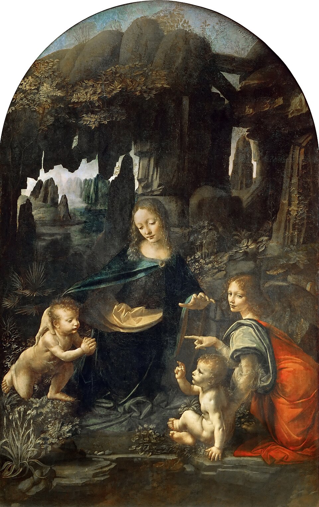
画像を拡大 ＋《岩窟の聖母（ルーヴル版）》
- 作者
- レオナルド・ダ・ヴィンチ
- 制作時期
- 1483～1486年頃
- 所在地・所蔵
- ルーヴル美術館、パリ
- 素材・形式
- 油彩（板からカンヴァスに移し替え）
出典・画像について

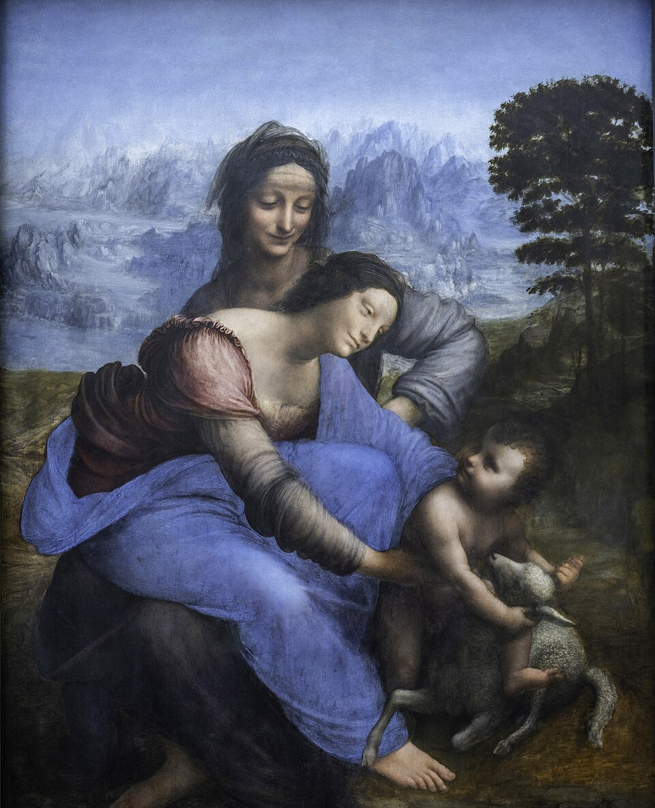
画像を拡大 ＋《聖アンナと聖母子》
- 作者
- レオナルド・ダ・ヴィンチ
- 制作時期
- 1503～1519年頃
- 所在地・所蔵
- ルーヴル美術館、パリ
- 素材・形式
- 油彩・ポプラ板
出典・画像について
フィレンツェで修業した後、レオナルドは長くミラノの宮廷に仕えました。この時期の代表作が《最後の晩餐》です。一点透視図法によって、中央のキリストに視線が向かいます。また、裏切り者ユダをほかの人物と同じ場面のなかに配置するなど、従来とは異なる表現を行いました。聖人の後ろに描かれてきた光輪がないことも、現実を重視したレオナルドらしい表現です。
画像を拡大 ＋
《最後の晩餐》
- 作者
- レオナルド・ダ・ヴィンチ
- 制作時期
- 1495～1498年
- 所在地・所蔵
- サンタ・マリア・デッレ・グラツィエ修道院食堂、ミラノ
- 素材・形式
- 壁画（乾いた壁面への混合技法）
出典・画像について
1500年頃、レオナルドはミラノからフィレンツェへ帰還しました。この頃に描いたのが、《モナ・リザ》です。世界で最も有名な絵画とも呼ばれるこの作品には、その技術が凝縮されています。輪郭線をなくすため、薄く溶いた絵の具を何層にも重ねるスフマート技法と、大気が持つ色の性質を利用する空気遠近法が用いられています。

《モナ・リザ》
- 作者
- レオナルド・ダ・ヴィンチ
- 制作時期
- 1503～1519年
- 所在地・所蔵
- ルーヴル美術館、パリ
- 素材・形式
- 油彩・ポプラ板
出典・画像について
フランスでの晩年と巨匠たちの世代差
動画 8:28～晩年のレオナルドは、フランス国王フランソワ1世に招かれ、余生をフランスで過ごしました。寡作だった彼には、フランソワ1世が話すことを好んだために、仕事が進まなかったという逸話も残ります。
レオナルドがフランスで暮らしたことをきっかけに、《モナ・リザ》はフランソワ1世のコレクションに入りました。現在ルーヴル美術館に所蔵されているのは、こうした巡り合わせによるものです。
人物・作品情報の補足：フランスでの晩年
映像は、フランスでの最後の5年間は仕事をせず、死後に王が《モナ・リザ》を購入したと説明します。一方、ルーヴルの作品台帳は1516年の渡仏、1519年の死去、1518年にフランソワ1世が作品を取得した可能性が非常に高いと記します。「5年間」「死後購入」をそのまま断定せず、国王との交流は逸話として残しました。最晩年に全く制作しなかったという説明も、確定した活動記録としては採用していません。
確認資料：ルーヴル作品台帳《モナ・リザ》
盛期ルネサンスの舞台がローマやヴェネツィアだった一方、レオナルドはその地での活動が多くありませんでした。他の芸術家より年長で、盛期には若い世代に押され、仕事を得にくかったためです。ローマで名声を得たミケランジェロは、レオナルドより23歳若い人物でした。
ミケランジェロ
ピエタと人体の理想美
動画 9:35～ミケランジェロも、もとはフィレンツェで活動していましたが、メディチ家の追放をきっかけに故郷を離れました。21歳からローマで活動し、25歳頃に代表作《ピエタ》を完成させます。十字架から降ろされたキリストを、聖母マリアが抱きかかえる場面を、大理石に彫った作品です。
修業時代にメディチ家の庇護を受けたミケランジェロは、一族が収集した古代彫刻を見て学んだといわれます。画家ギルランダイオにも師事しましたが、その教えよりも古代彫刻から学ぶところが多かったようです。
ミケランジェロの特徴には、古代彫刻に見られる肉体の理想美と、誇張表現があります。《ピエタ》では、キリストを抱く聖母が、実際にはキリストより大きく作られています。自然を忠実に写すだけでは、聖母が無理にキリストを抱えているように見えてしまいます。人体を巧みに誇張することで、自然な見栄えを得たのです。

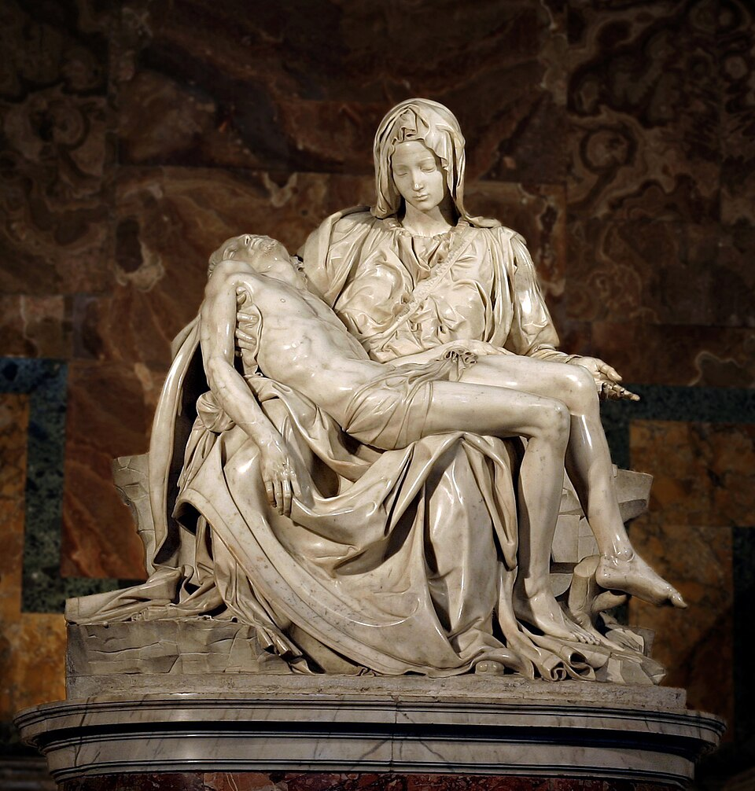
画像を拡大 ＋《ピエタ》
- 作者
- ミケランジェロ・ブオナローティ
- 制作時期
- 1498～1499年頃
- 所在地・所蔵
- サン・ピエトロ大聖堂、ヴァチカン
- 素材・形式
- 大理石
出典・画像について
サン・ピエトロ大聖堂の原品写真。
画像出典：Stanislav Traykov（撮影） / Tetraktys（既存の切抜き）
CC BY 2.5
作品情報：作品・画像・利用条件
制作メモ
出典の既存の切抜きを保存。
戦いに挑むダヴィデ
動画 10:38～1498年、フィレンツェでは、過剰な節制を求める政治に市民が反発し、サヴォナローラが失脚しました。一時帰郷していたミケランジェロは、自治を象徴する作品の制作を依頼されます。それが《ダヴィデ》です。20代で制作したこの作品は、彫刻家としての評価を決定づけたといわれます。
高さ517センチメートル、幅199センチメートルという大きさと、その肉体美は、古代や自然をもしのぐほどと評価されます。構図も独特です。それまでのダヴィデ像は、倒したゴリアテの頭を踏む姿が一般的でした。これに対し、ミケランジェロは石を手にし、これからゴリアテに挑もうとする場面を表しました。

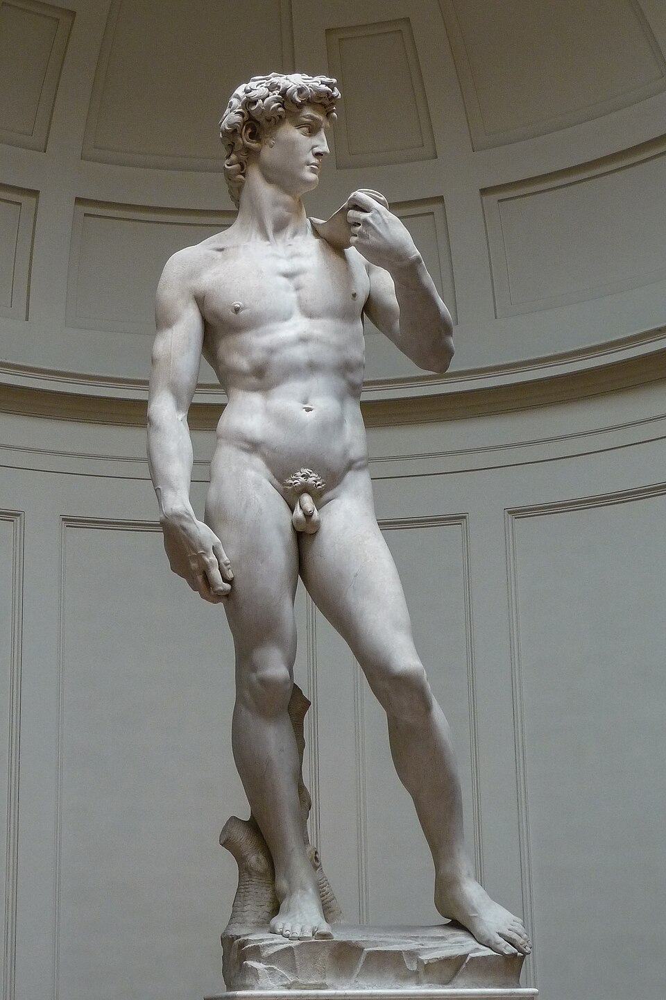
画像を拡大 ＋《ダヴィデ》
- 作者
- ミケランジェロ・ブオナローティ
- 制作時期
- 1501～1504年
- 所在地・所蔵
- アカデミア美術館、フィレンツェ
- 素材・形式
- 大理石
出典・画像について
システィーナ礼拝堂の天井画と壁画
動画 11:28～1505年、ミケランジェロはユリウス2世に招かれ、再び活動の場をローマへ移しました。のちに与えられた仕事が、システィーナ礼拝堂の天井画です。本来は彫刻家だったため、気乗りしない仕事だったともいわれますが、絵画でも卓越した才能を発揮しました。筋肉質で力強い人物像と、カンジャンテという独特の色彩表現を用いた、独創的な作品となっています。

《システィーナ礼拝堂天井画》
- 作者
- ミケランジェロ・ブオナローティ
- 制作時期
- 1508～1512年
- 所在地・所蔵
- システィーナ礼拝堂、ヴァチカン
- 素材・形式
- フレスコ画
出典・画像について
ミケランジェロは88歳まで生き、三大巨匠のなかで唯一、盛期の後の後期ルネサンスにも活動しました。《最後の審判》はその時期に描いた作品で、彼を代表する一作です。《最後の晩餐》とは、異なる主題の作品です。

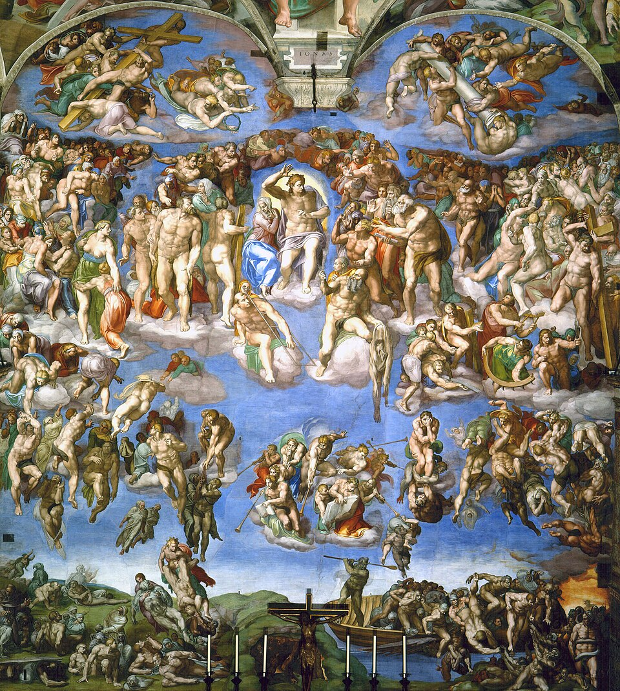
画像を拡大 ＋《最後の審判》
- 作者
- ミケランジェロ・ブオナローティ
- 制作時期
- 1536～1541年
- 所在地・所蔵
- システィーナ礼拝堂祭壇壁、ヴァチカン
- 素材・形式
- フレスコ画
出典・画像について
ラファエロ
ラファエロの吸収力と《アテネの学堂》
動画 12:19～レオナルドとミケランジェロに並ぶ、もう一人の巨匠がラファエロ・サンティです。ペルジーノに師事し、フィレンツェ滞在を経た後、ローマで才能を発揮し、人気画家となりました。ペルジーノはヴェロッキオの弟子なので、レオナルドとは同門にあたります。
人物情報の補足：ラファエロの修業地
字幕はフィレンツェでペルジーノに師事したと説明しますが、ナショナル・ギャラリーの解説では、ウンブリアでペルジーノと技術を磨き、1504年頃にフィレンツェへ移ったとされます。師事したこととフィレンツェでの活動を保持し、場所の混同だけを避けています。
確認資料：ナショナル・ギャラリー
若いラファエロが短期間で円熟したルネサンス様式を身につけた理由は、他の芸術家の描き方を学び、吸収する力に優れていたからです。《牧場の聖母》では、レオナルドが用いた、人物を三角形に配置する構図から着想を得ています。

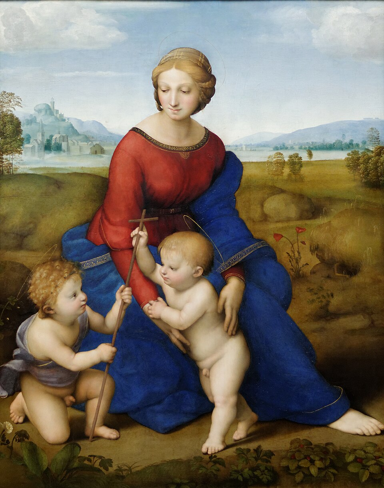
画像を拡大 ＋《牧場の聖母（ベルヴェデーレの聖母）》
- 作者
- ラファエロ・サンティ
- 制作時期
- 1505年または1506年
- 所在地・所蔵
- ウィーン美術史美術館
- 素材・形式
- 油彩・板
出典・画像について
ユリウス2世の命で制作した《アテネの学堂》は、ラファエロの最高傑作ともいわれます。古代ギリシアの哲学者たちが集う大胆な作品です。構図はレオナルドから、力強い人物表現はミケランジェロから学んでおり、盛期ルネサンスの集大成ともいえるでしょう。

《アテネの学堂》
- 作者
- ラファエロ・サンティ
- 制作時期
- 1509～1511年
- 所在地・所蔵
- ヴァチカン宮殿、署名の間
- 素材・形式
- フレスコ画
出典・画像について
聖母の画家と古典主義の理想
動画 13:11～ラファエロは「聖母の画家」とも呼ばれ、柔らかな表現の聖母像を数多く描いて人気を得ました。容姿に恵まれ、女性のモデルにも困らなかったという話が伝えられています。1520年、熱病のため37歳で亡くなりました。女性関係の奔放さを死因の一つとする逸話もありますが、確定した死因とは区別する必要があります。

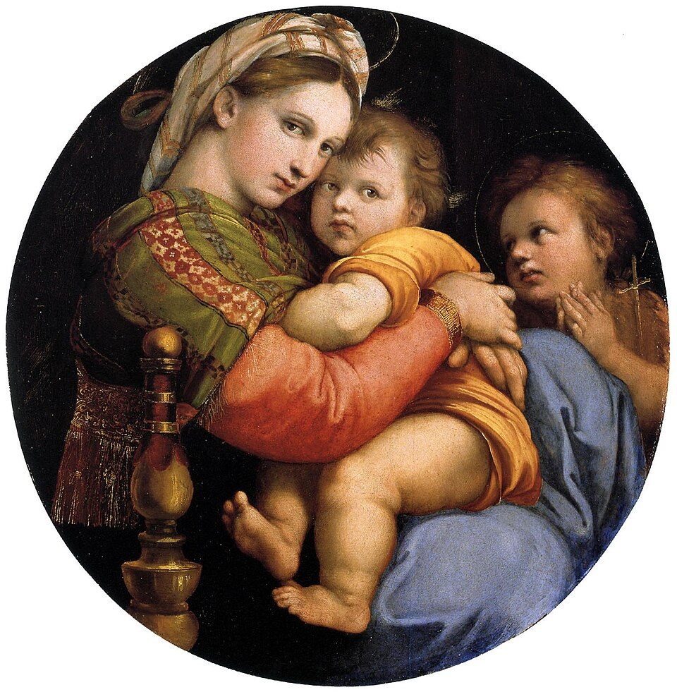
画像を拡大 ＋《小椅子の聖母》
- 作者
- ラファエロ・サンティ
- 制作時期
- 1513～1514年
- 所在地・所蔵
- ピッティ宮殿パラティーナ美術館、フィレンツェ
- 素材・形式
- 油彩・板
出典・画像について
画像出典：Raphael
Public domain（PD-Art）
作品情報：作品・画像・利用条件

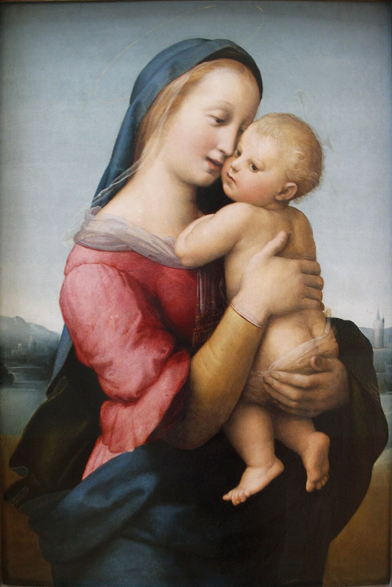
画像を拡大 ＋《テンピ家の聖母》
- 作者
- ラファエロ・サンティ
- 制作時期
- 1508年
- 所在地・所蔵
- アルテ・ピナコテーク、ミュンヘン
- 素材・形式
- 油彩・板
出典・画像について
留保：死因にまつわる逸話
女性関係と死去を結び付ける話は、解説に含まれる逸話として保持しました。現代の診断として確認した説明ではなく、確定した死因としては扱いません。
ラファエロが確立した古典主義的な理想美は、19世紀頃まで、美術における形式美の象徴とされました。レオナルド、ミケランジェロ、ラファエロの手法は、後世の芸術家にも大きな影響を与え、マニエリスムやバロックへつながっていきます。
ヴェネツィア派
ヴェネツィアの油彩とベッリーニ
動画 14:07～ヴェネツィアでは、海上貿易で得た富を背景に、ローマとは異なる美術が展開しました。1470年代、アントネッロ・ダ・メッシーナが、フランドル地方の油彩技法をヴェネツィアへ持ち帰りました。油彩は、フレスコやテンペラと異なり、乾燥が遅いため、繰り返し描き直したり、上から描き重ねたりすることができました。
その油彩を発展させたのが、ベッリーニ一族です。なかでも、ジョヴァンニ・ベッリーニは大きな影響を与えました。メッシーナから油彩技法を伝えられた彼は、写実性を極めた肖像画で人気を得ました。ジョヴァンニのもとでは、16世紀のヴェネツィアを代表するジョルジョーネとティツィアーノが修業します。彼らのもとで、初めから色彩によって描く技法と、自由なタッチや色使いが完成しました。

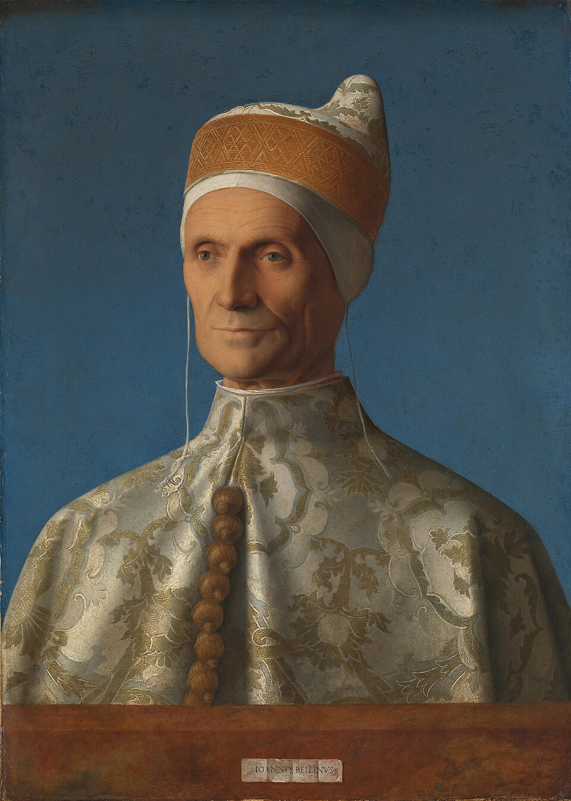
画像を拡大 ＋《総督レオナルド・ロレダンの肖像》
- 作者
- ジョヴァンニ・ベッリーニ
- 制作時期
- 1501～1502年頃
- 所在地・所蔵
- ナショナル・ギャラリー、ロンドン
- 素材・形式
- 油彩・板
出典・画像について
色彩から描くヴェネツィア派とジョルジョーネ
動画 14:53～フィレンツェ派とヴェネツィア派では、描き方に違いがあります。ボッティチェリに代表されるフィレンツェ派は、デッサンを重視しました。主に用いるフレスコやテンペラはすぐ乾くため、十分な計画を立て、あらかじめ描いた下絵の上に色を置きました。描く前の構想を重視する方法です。
これに対し、ヴェネツィア派は下絵を重視せず、色を塗る段階から描き始めました。感覚に従って筆を動かすため、独特なタッチが生まれます。遅く乾く油彩だからこそ、制作の途中で構想を変更できました。
ジョルジョーネの《嵐》には、制作途中で変更した箇所がいくつも見つかっています。また、人物を中心に据えるのではなく、風景のなかに添えるように、小さく描いています。この作品は、最初期の風景画の一つとして知られます。

《嵐（テンペスタ）》
- 作者
- ジョルジョーネ
- 制作時期
- 1508年頃
- 所在地・所蔵
- アカデミア美術館、ヴェネツィア
- 素材・形式
- 油彩・カンヴァス
出典・画像について
画像出典：Giorgione
Public domain（PD-Art）
作品情報：作品・画像・利用条件
ジョルジョーネは、人物を風景に溶け込ませる表現が得意でした。その人物表現には、1500年頃にヴェネツィアを訪れたレオナルドの影響が現れているといわれます。

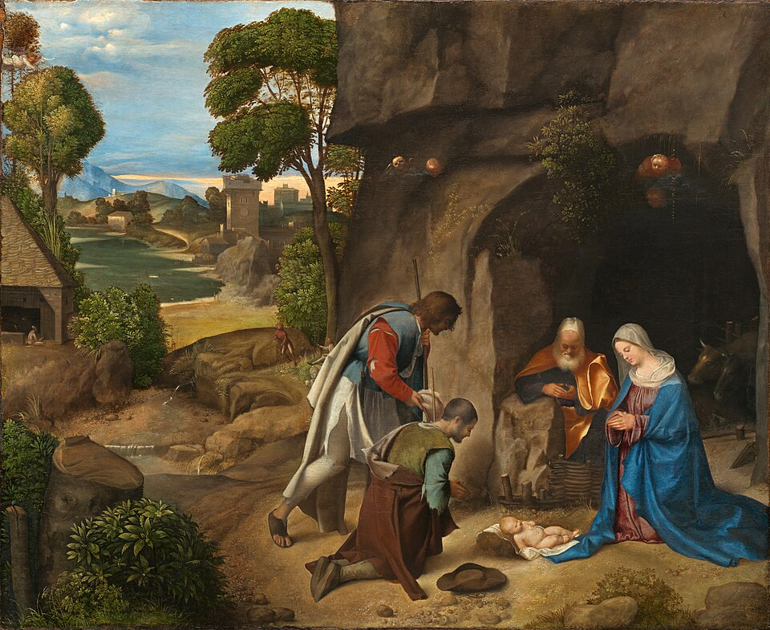
画像を拡大 ＋《羊飼いの礼拝（アレンデールの降誕）》
- 作者
- ジョルジョーネ
- 制作時期
- 1505～1510年
- 所在地・所蔵
- ナショナル・ギャラリー・オブ・アート、ワシントン
- 素材・形式
- 油彩・板
出典・画像について
画像出典：Giorgione
Public domain（PD-Art）
作品情報：作品・画像・利用条件
写実と色彩のティツィアーノ
動画 16:10～ジョルジョーネは1510年、33歳で亡くなりました。その後を継いだのが、弟子のティツィアーノです。師の画風を吸収しながら、さらに写実性を高め、ヴェネツィアだけでなくイタリア随一と評される画家となりました。鮮やかな色彩も、その特徴です。
ティツィアーノは、官能的なヴィーナス像を数多く描きました。代表作《ウルビーノのヴィーナス》は、ジョルジョーネの《眠れるヴィーナス》の構図を用いながら、さらに写実性を加え、官能的な作品に仕上げています。両作品を比べると、その違いが分かります。

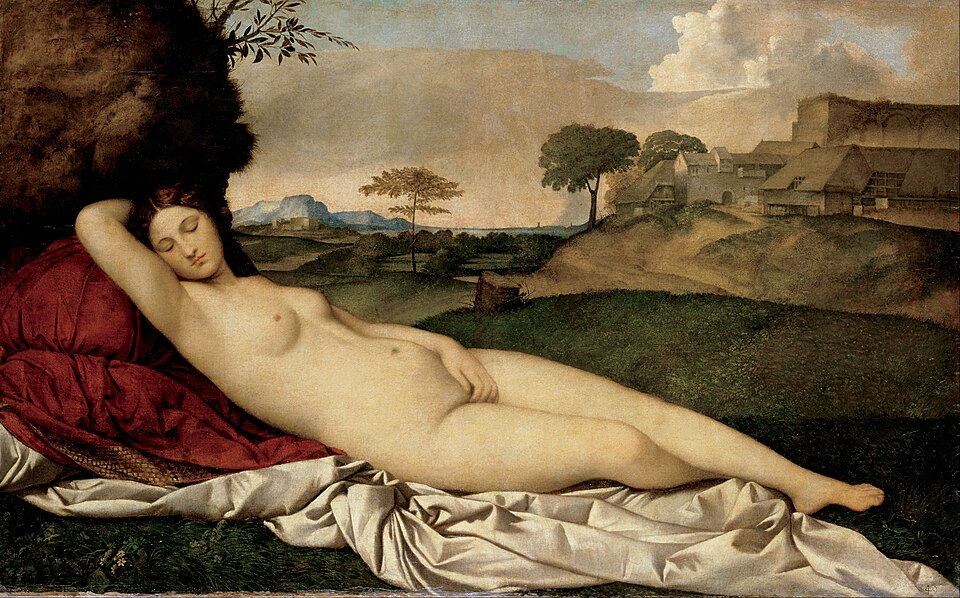
画像を拡大 ＋《眠れるヴィーナス》
- 作者
- ジョルジョーネ（ティツィアーノも制作に関与）
- 制作時期
- 1508～1510年
- 所在地・所蔵
- アルテ・マイスター絵画館、ドレスデン国立美術館
- 素材・形式
- 油彩・カンヴァス
出典・画像について
画像を拡大 ＋
《ウルビーノのヴィーナス》
- 作者
- ティツィアーノ
- 制作時期
- 1538年
- 所在地・所蔵
- ウフィツィ美術館、フィレンツェ
- 素材・形式
- 油彩・カンヴァス
出典・画像について
画像出典：Titian
Public domain（PD-Art）
作品情報：作品・画像・利用条件
ティツィアーノは、ミケランジェロと同じく長寿の芸術家でした。晩年には作風が変わり、タッチも荒々しくなります。17世紀のバロック美術を、すでに内包していたともいえるでしょう。盛期ルネサンスの後にも活動したミケランジェロとティツィアーノは、後世の芸術家へ大きな影響を与えました。

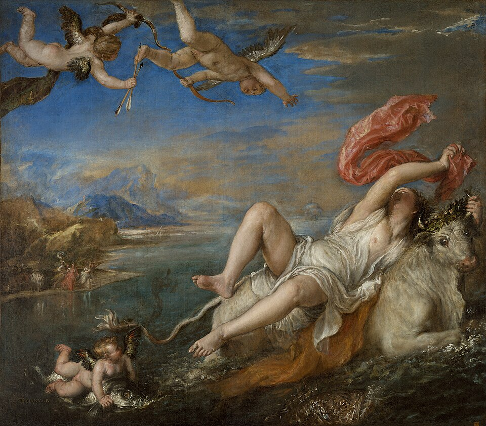
画像を拡大 ＋《エウロペの略奪》
- 作者
- ティツィアーノ
- 制作時期
- 1559～1562年
- 所在地・所蔵
- イザベラ・スチュワート・ガードナー美術館、ボストン
- 素材・形式
- 油彩・カンヴァス
出典・画像について
盛期ルネサンスの終わり
ローマ劫掠と芸術家の移動
動画 17:06～数多くの傑作が生まれた盛期ルネサンスも、イタリア社会の混乱によって終わりへ向かいます。1500年から1530年頃にも、フランスと神聖ローマ帝国の間でイタリア戦争が続いていました。カール5世は神聖ローマ皇帝であると同時に、スペイン王も兼ね、大きな国家を支配していました。
ローマ教皇は、当初は神聖ローマ帝国と組んで、フランス軍を退けました。しかし1527年、教皇クレメンス7世は両国の間で揺れた末に、フランス側に付きます。その報復として、神聖ローマ帝国軍がローマで大規模な略奪を行いました。ローマ劫掠と呼ばれる事件です。
ローマの芸術家も被害を受け、他の都市へ活動の場を移さざるを得なくなりました。芸術の中心としてのローマは停滞します。一方、パルミジャニーノらが各地へ移ったことで、次の様式であるマニエリスムが伝わっていきました。戦争と社会の変化が、美術の変遷にもつながったのです。
画像を拡大 ＋
《長い首の聖母》
- 作者
- パルミジャニーノ
- 制作時期
- 1534～1540年
- 所在地・所蔵
- ウフィツィ美術館、フィレンツェ
- 素材・形式
- 油彩・板
出典・画像について
要点まとめ
- 盛期ルネサンスは1500年からの約30年間。三大巨匠レオナルド・ダ・ヴィンチ、ミケランジェロ、ラファエロと、ヴェネツィアのジョルジョーネらが活躍し、その美術は19世紀半ば頃まで最高のものとして絶対視された。
- 「豪華王」ロレンツォ・デ・メディチの死後、1494年のイタリア戦争でシャルル8世の侵入を許したメディチ家は追放され、フィレンツェは中心ではなくなった。サヴォナローラの影響を受けたボッティチェリは作風が変わった。
- 舞台はローマとヴェネツィアへ移った。「戦う教皇」ユリウス2世はミケランジェロ、ラファエロ、ブラマンテを支援した重要なパトロンである。
- 「万能の人」レオナルドはヴェロッキオの工房で修業した。《岩窟の聖母》の三角形の構図、《最後の晩餐》の一点透視図法、《モナ・リザ》のスフマートと空気遠近法が知られる。晩年はフランソワ1世に招かれフランスで過ごした。
- ミケランジェロは大理石の《ピエタ》、ゴリアテに挑もうとする《ダヴィデ》で評価を決定づけた。ユリウス2世に招かれてシスティーナ礼拝堂の天井画をカンジャンテなどで描き、後期ルネサンスには《最後の審判》を描いた。
- ラファエロはペルジーノに師事し、他の芸術家から学ぶ吸収力に優れた。《牧場の聖母》、盛期ルネサンスの集大成ともいえる《アテネの学堂》を描き、「聖母の画家」と呼ばれた。1520年に37歳で亡くなった。
- 1470年代、アントネッロ・ダ・メッシーナがフランドルの油彩技法をヴェネツィアへ伝え、ジョヴァンニ・ベッリーニが発展させた。デッサンを重視するフィレンツェ派に対し、ヴェネツィア派は色を塗る段階から描き始めた。
- ジョルジョーネの《嵐》は最初期の風景画の一つ。弟子ティツィアーノは写実と鮮やかな色彩で知られ、《ウルビーノのヴィーナス》はジョルジョーネの《眠れるヴィーナス》の構図を用いている。晩年の荒々しいタッチはバロックを内包していたともいえる。
- 1527年、教皇クレメンス7世がフランス側に付いた報復として、神聖ローマ帝国軍がローマで略奪を行った（ローマ劫掠）。芸術家が各地へ移ったことで、次のマニエリスムが伝わった。
確認問題
答えを考えてから開いてください。選択問題は選ぶとすぐ正誤と解説が出ます（選択肢の順番は開くたびに変わります）。各問題のリンクから該当の章や作品カードへ戻れます。
選択問題：0／5問回答・正解0
A. 一問一答答えを考えてから開く
問1《モナ・リザ》で輪郭線をなくすため、薄く溶いた絵の具を何層にも重ねた技法を何と呼ぶか。
答えを見る
問2「戦う教皇」と呼ばれ、ミケランジェロ、ラファエロ、ブラマンテらを招いてローマの復興を進めた教皇は誰か。
答えを見る
問31527年、教皇クレメンス7世がフランス側に付いた報復として、神聖ローマ帝国軍がローマで行った大規模な略奪を何と呼ぶか。
答えを見る
B. 4択選ぶとすぐ正誤と解説
問41470年代に、フランドル地方の油彩技法をヴェネツィアへ持ち帰った画家は誰か。
→ 本文で確認（ヴェネツィアの油彩とベッリーニ）
問5ミケランジェロの《ダヴィデ》が、それまでのダヴィデ像と異なる点はどれか。
→ 本文で確認（戦いに挑むダヴィデ）
問6ヴェネツィア派の描き方として正しいものはどれか。
→ 本文で確認（色彩から描くヴェネツィア派とジョルジョーネ）
C. 図版問題画像を見て答える
問7この作品の名前と作者を答えよ。
答えを見る
問8この作品の作者は誰か。
→ 作品カードで確認
問9この作品の作者は誰か。
→ 作品カードで確認